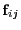
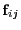
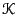
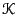

Let us consider a few of the important elements of any MD program:
We will understand these elements by manipulating an existing
simulation program that implements the Lennard-Jones fluid
(which you may recall was analyzed using Metropolis Monte-Carlo
simulation in Sec. 3). Recall the Lennard-Jones pair
potential:
| (145) |
We have already encountered interparticle forces for the Lennard-Jones
pair potential in the context of computing the pressure from the
virial in the MC simulation of the LJ fluid (Sec. 3.6). Briefly,
the force exerted on particle  by virtue of its Lennard-Jones interaction
with particle
by virtue of its Lennard-Jones interaction
with particle  , , is given by:
, , is given by:
| (147) |
Below is a C-code fragment for computing both the total potential energy and interparticle forces:
0 double forces ( double * rx, double * ry, double * rz,
1 double * fx, double * fy, double * fz, int n ) {
2 int i,j;
3 double dx, dy, dz, r2, r6, r12;
4 double e = 0.0, f = 0.0;
5
6 for (i=0;i<n;i++) {
7 fx[i] = 0.0;
8 fy[i] = 0.0;
9 fz[i] = 0.0;
10 }
11 for (i=0;i<(n-1);i++) {
12 for (j=i+1;j<n;j++) {
13 dx = (rx[i]-rx[j]);
14 dy = (ry[i]-ry[j]);
15 dz = (rz[i]-rz[j]);
16 r2 = dx*dx + dy*dy + dz*dz;
17 r6i = 1.0/(r2*r2*r2);
18 r12i = r6i*r6i;
19 e += 4*(r12i - r6i);
20 f = 48/r2*(r6i*r6i-0.5*r6i);
21 fx[i] += dx*f;
22 fx[j] -= dx*f;
23 fy[i] += dy*f;
24 fy[j] -= dy*f;
25 fz[i] += dz*f;
26 fz[j] -= dz*f;
27 }
28 }
29 return e;
30 }
Notice that the argument list now includes arrays for the forces, and
because force is a vector quantity, we have three parallel arrays for
a three-dimensional system. These forces must of course be
initialized, shown in lines 6-10. The
The second major aspect of MD is the integrator. As discussed in
class, we will primarily use Verlet-style (explicit) integrators. The
most common version is the velocity-Verlet algorithm [8],
first presented in Sec. 4.1.1. Below is a fragment of C-code
for executing one time step of integration for a system of  particles:
particles:
1 for (i=0;i<N;i++) {
2 rx[i]+=vx[i]*dt+0.5*dt2*fx[i];
3 ry[i]+=vy[i]*dt+0.5*dt2*fy[i];
4 rz[i]+=vz[i]*dt+0.5*dt2*fz[i];
5 vx[i]+=0.5*dt*fx[i];
6 vy[i]+=0.5*dt*fy[i];
7 vz[i]+=0.5*dt*fz[i];
8 }
9
10 PE = total_e(rx,ry,rz,fx,fy,fz,N,L,rc2,ecor,ecut,&vir);
11
12 KE = 0.0;
13 for (i=0;i<N;i++) {
14 vx[i]+=0.5*dt*fx[i];
15 vy[i]+=0.5*dt*fy[i];
16 vz[i]+=0.5*dt*fz[i];
17 KE+=vx[i]*vx[i]+vy[i]*vy[i]+vz[i]*vz[i];
18 }
19 KE*=0.5;
You will notice the update of positions in lines 1-8
(Eq. 119), where vx[i] is the  -component of
velocity, fx[i] is the
-component of
velocity, fx[i] is the  -component of force, dt and dt2 are the time-step and squared time-step, respectively. Notice
that there is no implementation of periodic boundaries in this
code fragment; what would this ``missing code'' look like? (Hint: see
mdlj.c for the answer!) Lines 5-7 are the first half-update of
velocities (Eq. 120). The force routine computes
the new forces on the currently updated configuration on line 10.
Then, lines 12-18 perform the second-half of the velocity update
(Eq. 121). Also note that the kinetic energy,
, is computed in this loop.
-component of force, dt and dt2 are the time-step and squared time-step, respectively. Notice
that there is no implementation of periodic boundaries in this
code fragment; what would this ``missing code'' look like? (Hint: see
mdlj.c for the answer!) Lines 5-7 are the first half-update of
velocities (Eq. 120). The force routine computes
the new forces on the currently updated configuration on line 10.
Then, lines 12-18 perform the second-half of the velocity update
(Eq. 121). Also note that the kinetic energy,
, is computed in this loop.